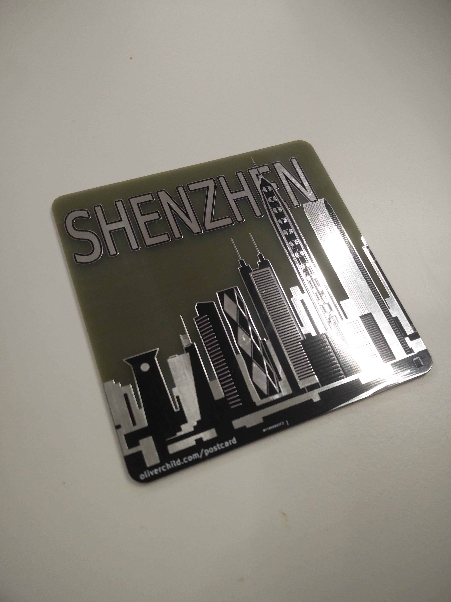
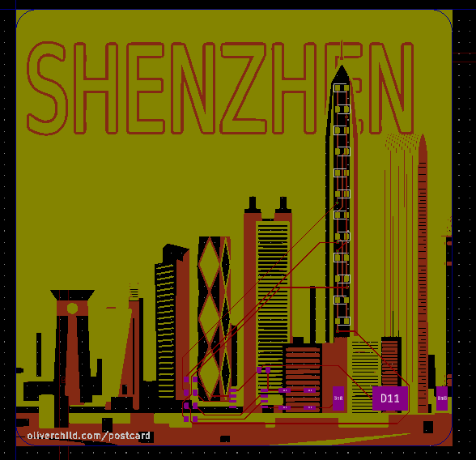
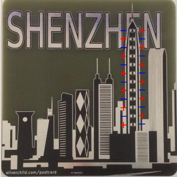
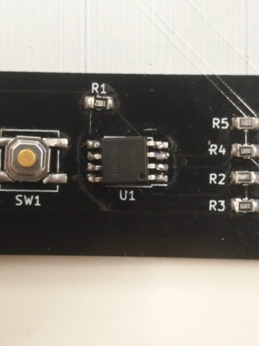

PCB Postcard
Last month I was in Shenzhen doing all sorts of fun things. As I had spent quite a long time from home, I needed to remind people of my existence. I decided sending some postcards would be a good idea. Unfortunately Shenzhen is not the most touristic place in the world and postcards there aren’t very exciting. On the other hand, Shenzhen is the best place in the world to get any kind of electronics manufactured. So I decided to make my own postcards. Not just any postcards, but PCB postcards!

The idea was to make some kind of PCB art and add some blinky LEDs that people can solder on if they wanted or just keep bare as a decorative piece. On the other side of the PCB would be blank space for something to be written just like on a standard postcard. The aim was to make it as much like a postcard as possible and be able to actually write on the address, add a stamp and actually post it. In reality it turned out that the difference in price between having them made 100x100mm and 105x140mm Was quite significant. I instead went for the smaller size which makes them look more like drinks coasters (second life?). Also, in my second order of PCBs I made a mistake and ordered thicker boards, so the majority of boards are 1.6mm rather than the intended 0.6mm.
How did I make the postcard?
I spent a long time trying to sketch out some buildings from the Shenzhen skyline in Inkscape, but didn’t get very far. After a while I started looking online for vector art of the Shenzhen skyline and found some I really liked. I needed to process this to make it suitable for the different layers of a PCB. I separated out the colours and then put them each on their own layers and added the text. Exporting them as PNGs then let me bring them into the Kicad import bitmap tool to create a custom footprint. Some magic then has to be done by changing names in the footprint file to make sure they are all on the right layers. I learnt later on that I could have just used SVG2Shenzhen, a tool that automatically does all the layers for you.
Once in Kicad, I made a simple circuit with a button, some charlieplexed LEDs and an ATtiny85 microcontroller. Swapping back and forth between Kicad and Inkscape allowed me to easily align the LEDs with the tallest building on the postcard.
The boards were manufactured by PCBWAY just out of convenience and through recommendation from friends. The PCBs arrived in 4 days, I think it might have been faster if I had gone with a less international reaching, Shenzhen based board house. It was still an incredible feeling to have the PCBs in my hands only days later.

I got a post card! What next?
Wow! you already got a postcard, lucky you!
If you don’t want to solder it together or don’t have the components, display it for the world to see! Hang it up, use it as a coaster, or post it somewhere else.
If you do want to solder it together, there are a few things you have to know: R1 is the 10k ohm resistor (1002) and R2-5 are the 100 ohm resistors(1000). The LEDs are charlieplexed so aren’t all facing the same way. On the board, the silkscreen C shape is on the cathode so it lines up with the side of the LED which doesn’t have the green bits on the other side, as shown in the picture. The ATtiny chip is facing downwards so that the dot is pointing to the bottom right of the board. It should otherwise be quite obvious… (if not please let me know)
|  |  |

Also, if you are missing / want parts or are having problems just let me know and I’ll get them to you.
Code for the ATtiny, and gerbers can be found on my Github.